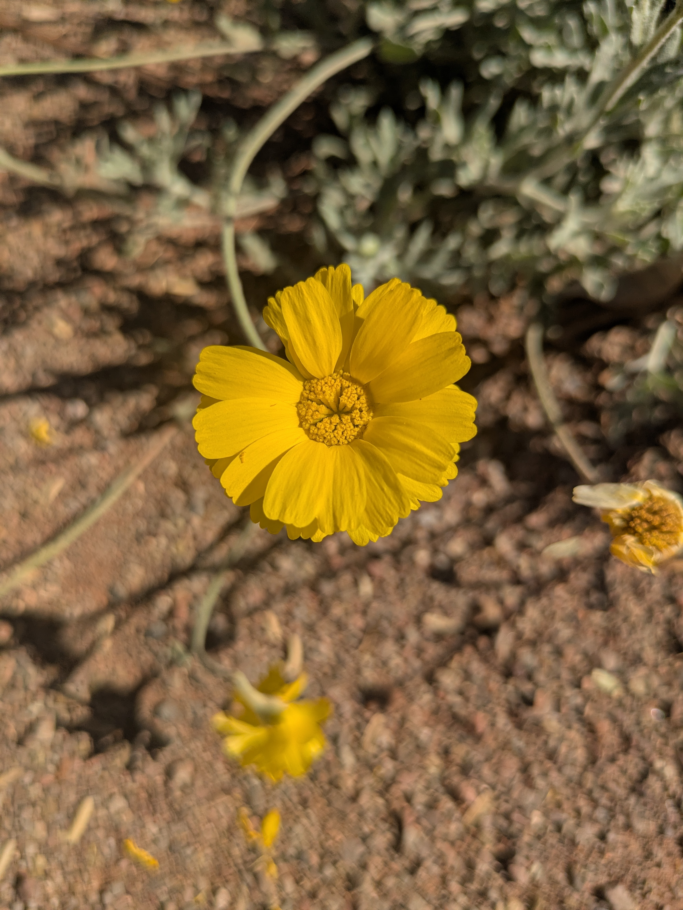

Desert Wildflowers

The Desert wildflowers, growing primarily in the Senora Desert. They are hearty plants, growing in all sorts of terrain and environments and still managing to thrive. They are a reliable source of seasonal pollen for pollinators and other insects and small animals that would feed on their seeds. They live a short life but, at that time, can reproduce fast and spread wide, allowing them to thrive. There are many types of wildflowers with many district colors.
| Desert Wildflowers | description | amount |
|---|---|---|
| Light Exposer | Because of their enviornment Desert Wildflowers thrive in full sun, while they are hearty plants it is recommended to plant or grow them where they can get unobstructed sunlight. | 6+ hours |
| Watering | when growing from a seed or when young, keep the soil moist. Once it is established keep water to a minimum or not at all. Suppliment water during dry periods. | 0 - 1/2 in per week. |
| Soil Needs | Use well draining soil, keep organic matter to a minimum. Avoid materials that retain water. | mix sand, gravel, and potting soil. |